sCellege
MAbID Workflow Overview
Multiplexing Antibodies by barcode Identification (MAbID) is a method for combinatorial genomic profiling of histone modifications and chromatin-binding proteins. MAbID employs antibody-DNA conjugates to integrate barcodes at the genomic location of the epitope, enabling combined incubation of multiple antibodies to reveal the distributions of many epigenetic markers simultaneously.
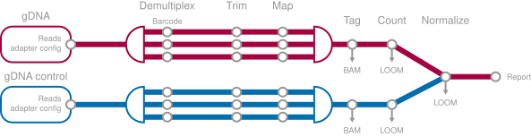
Installation
Prerequisites
The workflow requires:
Nextflow to execute the workflow
A container engine to run the steps in the workflow ( Singularity, Apptainer or Docker )
Python To generate the sample sheet, this can optionally be run from a Docker container
Nextflow Installation
- Make sure NextFlow is installed
- Make sure Nextflow is available on the PATH
Containers
- All workflow steps (processes) run inside a Singularity, Apptainer or Docker container. Make sure to have one of these container engines available.
Docker container installation
When using Docker you need to download and install the Docker container which contains the software for the analysis. For Singularity and Apptainer this step is not needed!
curl -O https://barbansonbiotech.eu/download/scellgen/containers/mabid/scellgen_mabid_v8.tar.gz
docker load < scellgen_mabid_v8.tar.gzcurl -O https://barbansonbiotech.eu/download/scellgen/containers/mabid/scellgen_mabid_v8.tar.gz
docker load < scellgen_mabid_v8.tar.gzScellgenpy (sample sheet only) installation
pip install https://barbansonbiotech.eu/download/scellgen/sCellgenPythonSampleSheet.zippip install https://barbansonbiotech.eu/download/scellgen/sCellgenPythonSampleSheet.zipYou can instead of installing sCellGenpy also use Docker.
Download the workflow
The command below downloads the workflow and enters the workflow folder:
curl -s https://barbansonbiotech.eu/download/scellgen/workflow/download_workflow.sh | bash && cd scellgenmabidworkflowcurl -s https://barbansonbiotech.eu/download/scellgen/workflow/download_workflow.sh | bash && cd scellgenmabidworkflowPrepare references
The workflow requires a reference Fasta file and a gene annotation gtf or gff file.
The test datasets are mouse based.
In the workflow folder use this command to pull the latest Mouse reference Fasta and annotations from Ensembl:
./download_reference.sh mus_musculus./download_reference.sh mus_musculusYou can replace mus_musculus with homo_sapiens to download the latest human assembly.
Workflow test run
Small test-sets are available in the folder test_inputs to verify if the workflow runs correctly.
Make sure you download a mouse reference first, this is required for the tests.
To run bulk gDNA only test samples (fastest test):
NOTE: you can run the steps in the pipeline using Docker or Singularity / Apptainer, this is configured using the -profile flag.
nextflow run main.nf -profile singularity,test --outdir testrun_bulk_resultnextflow run main.nf -profile singularity,test --outdir testrun_bulk_result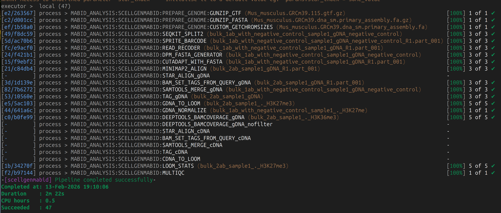
If this test passes the workflow works correctly.
The only remaining hurdle is to prepare your own samplesheets using scellgen_generate_mabid_workflow_config.
To test if that works correctly:
Using scellgen_generate_mabid_workflow_config without docker
scellgen_generate_mabid_workflow_config \
./test_inputs/bulk*/*.xlsx \
--out testrun_bulk_samplesheet.csv
nextflow run main.nf \
-c nextflow.config \
--input testrun_bulk_samplesheet.csv \
--outdir testrun_bulk_results \
-ansi-log false -profile singularity \
--fasta references/mus_musculus/115/Mus_musculus.GRCm39.dna_sm.primary_assembly.fa.gz \
--gtf references/mus_musculus/115/Mus_musculus.GRCm39.115.gtf.gzscellgen_generate_mabid_workflow_config \
./test_inputs/bulk*/*.xlsx \
--out testrun_bulk_samplesheet.csv
nextflow run main.nf \
-c nextflow.config \
--input testrun_bulk_samplesheet.csv \
--outdir testrun_bulk_results \
-ansi-log false -profile singularity \
--fasta references/mus_musculus/115/Mus_musculus.GRCm39.dna_sm.primary_assembly.fa.gz \
--gtf references/mus_musculus/115/Mus_musculus.GRCm39.115.gtf.gzUsing docker
The command below runs the script scellgen_generate_mabid_workflow_config from a docker container, this is helpful in cases where no Python environment is available.
docker run -v "$(pwd)":/work -w /work --rm scellgen_mabid:latest scellgen_generate_mabid_workflow_config test_inputs/bulk*/*.xlsx --out testrun_bulk_samplesheet.csvdocker run -v "$(pwd)":/work -w /work --rm scellgen_mabid:latest scellgen_generate_mabid_workflow_config test_inputs/bulk*/*.xlsx --out testrun_bulk_samplesheet.csvFull workflow run
To run all test sets through the workflow:
scellgen_generate_mabid_workflow_config \
./test_inputs/*/*.xlsx \
--out testrun_full_samplesheet.csv \
nextflow run main.nf \
-c nextflow.config \
--input testrun_full_samplesheet.csv \
--outdir testrun_full_results \
-ansi-log false -profile singularity \
--fasta references/mus_musculus/115/Mus_musculus.GRCm39.dna_sm.primary_assembly.fa.gz \
--gtf references/mus_musculus/115/Mus_musculus.GRCm39.115.gtf.gzscellgen_generate_mabid_workflow_config \
./test_inputs/*/*.xlsx \
--out testrun_full_samplesheet.csv
nextflow run main.nf \
-c nextflow.config \
--input testrun_full_samplesheet.csv \
--outdir testrun_full_results -ansi-log false -profile singularity \
--fasta references/mus_musculus/115/Mus_musculus.GRCm39.dna_sm.primary_assembly.fa.gz \
--gtf references/mus_musculus/115/Mus_musculus.GRCm39.115.gtf.gzWorkflow configuration
- Install the prerequisites of the workflow
- Download the workflow
- Create a folder for each sample in the folder
./inputs(Create the folder./inputsif it does not exists) - For each sample:
- Copy the most applicable template configuration xlsx file from the folder
example_configurations, and put it in the sample folder - Create a folder gDNA for genomic input data
- Copy the reads (
fastq.gzfiles) to the folder gDNA. The reads from multiple lanes and runs are concatenated automatically by the workflow. - Configure the configuration xlsx file
- Copy the most applicable template configuration xlsx file from the folder
- In the workflow folder run
scellgen_generate_mabid_workflow_configto generate a sample sheet and adapter configuration files - Configure the workflow parameters in
nextflow.configor via command line arguments - Run the workflow
Configuration files
The global workflow parameters are configured by:
A) nextflow.config
B) Arguments passed to the workflow execution (these take precedence).
These global parameters control the reference genome used, the filtering and the binning settings.
Which samples are processed is configured using a samplesheet:
In this documentation samplesheet.csv is used to store the samplesheet. (Generated using scellgen_generate_mabid_workflow_config)
Each sample has individual adapter settings, these are stored in
gdna_adapter_config.txt. These files can also be generated using scellgen_generate_mabid_workflow_config.
Reference Genome
Configure reference by supplying a fasta file and an annotation file (if using gff provide –gff or if using gtf provide –gtf).
--fasta /path/to/genome.fa --gtf /path/to/annotations.gtfYou can also configure the reference genome location in nextflow.config
Sample configuration
Input Directory Structure
The input directory contains the data which is processed by the workflow. (Usually this folder is called inputs/)
See the folder test_inputs in the workflow folder for a example of the datastructure and settings.
Each sample is separately stored in a folder. This folder contains an excel sheet with the sample configuration and one or more subdirectories with sequenced reads:
| Subfolder | Contents |
|---|---|
| gDNA | Reads with genomic MabID data |
| gDNA_negative_control | Reads from a negative control sample (BULK ONLY!) |
The workflow is configured with one excel sheet per library.
Each library folder has one configuration.xlsx file which contains the configuration.
Then a subfolder gDNA with the gDNA reads.
The following data structure is expected for different library types:
gDNA Library
BulkLib1
├── BulkLib1_configuration.xlsx
└── gDNA
├── R1.fastq.gz
└── R2.fastq.gzBulkLib1
├── BulkLib1_configuration.xlsx
└── gDNA
├── R1.fastq.gz
└── R2.fastq.gzgDNA Library with Negative Control (Bulk only)
BulkLib2
├── BulkLib2_configuration.xlsx
├── gDNA
│ ├── R1.fastq.gz
│ └── R2.fastq.gz
└── gDNA_negative_control
├── R1.fastq.gz
└── R2.fastq.gzBulkLib2
├── BulkLib2_configuration.xlsx
├── gDNA
│ ├── R1.fastq.gz
│ └── R2.fastq.gz
└── gDNA_negative_control
├── R1.fastq.gz
└── R2.fastq.gzExcel Sheet Configuration
Summary
The summary sheet contains the top level information about the sample and experiment.
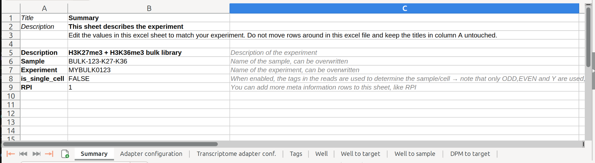
Adapter Configuration Sheet
Configure the adapter configuration and the location of the tags found in READ1 and READ2 in the adapter configuration sheet.
The tags are used to determine the originating sample of the read.
Separate the tag names with a pipe (|). When there is a spacer sequence use the tag SPACER, the length of the spacer sequence is configured using the SPACER cell.
Leave the field (READ1/READ2) empty to not capture any tags for the mate.
Make sure that for gDNA you need to capture the DPM sequence.
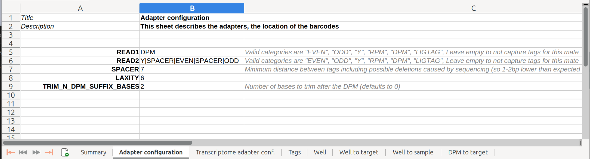
The LAXITY setting controls the maximum number of bases to look ahead if no tag is initially found.
The TRIM_N_DPM_SUFFIX_BASES will trim N nucleotides after the location where the DPM is found.
DPM to Target
Configure the relationship between the DPM and the epigenetic target in the DPM to target sheet.
If the well in the 96 well plate is encoding the target and not the DPM, leave this table empty.
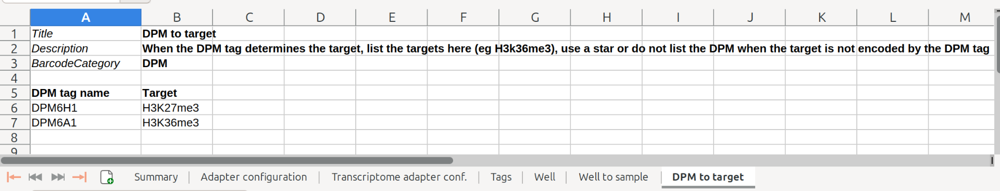
Excel Single Cell Configuration
The (minimum) difference between the configuration of a bulk and single cell sample is to add tags to the adapter configuration which allow for distinguishing cells. Usually (Odd/Even tags). Then enable single cell analysis by setting is_single_cell to TRUE
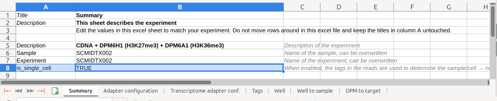
To configure a single cell experiment, more settings are available.
Note that these settings, listed below are all optional.
Well
This sheet encodes what barcode are used to identify the well. Any enabled tag in the Tags sheet can be referenced here.
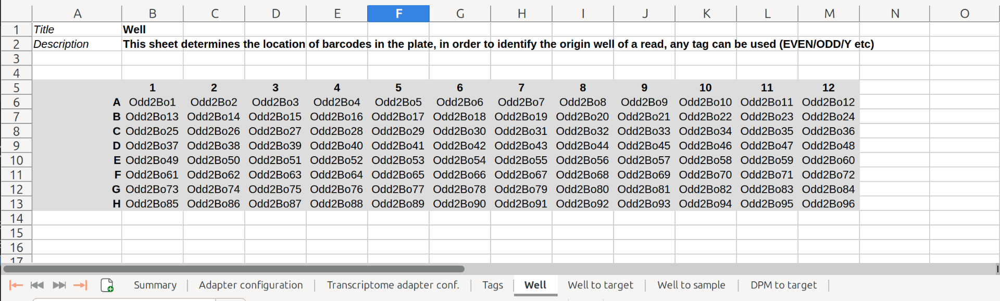
Well to Target
This sheet can be used to configure the well location encoding the (epi-)target. This requires the sheet Well to be present. You need to remove the sheet when there is no specific target associated with each well (for example, when the DPM tag encodes the target).
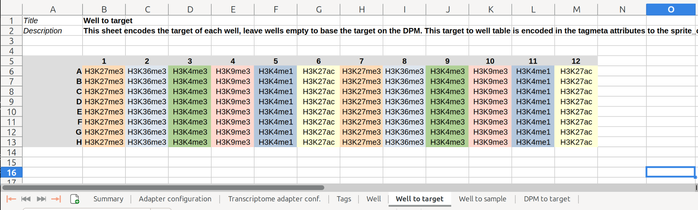
Well to Sample
This sheet can be used to configure the relationship between the well location and what sample condition. Otherwise the sheet needs to be removed.
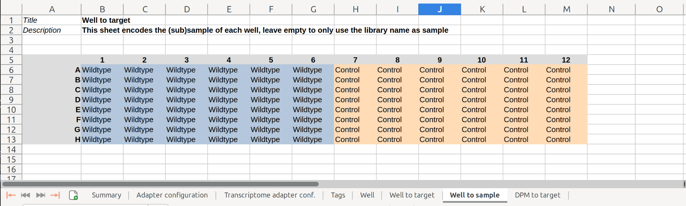
Write sample sheet and adapter configuration files
The workflow requires a samplesheet.csv, and for each library needs a gdna_adapter_config.txt file. This file can created from the library configuration files using the script scellgen_generate_mabid_workflow_config.
When you have collected all reads and configured all xlsx files into the folder inputs as described here. Then run the command scellgen_generate_mabid_workflow_config ./inputs_full/*/*.xlsx --out samplesheet.csv this writes a single samplesheet based on the excel sheet configuration files and generates gdna_adapter_config.txt file.
You can still make changes to the *adapter_config.txt files and samplesheet.csv later.
Execution
To execute the workflow, execute the following command in the workflow folder:
nextflow run main.nf -c nextflow.config --input samplesheet.csv --outdir results -ansi-log false -profile singularity_slurm --fasta /path/to/genome.fa --gtf /path/to/annotations.gtfnextflow run main.nf -c nextflow.config --input samplesheet.csv --outdir results -ansi-log false -profile singularity_slurm --fasta /path/to/genome.fa --gtf /path/to/annotations.gtfProfiles
Use -profile singularity or -profile apptainer or -profile docker for local execution.
Use -profile singularity,slurm to submit jobs to SLURM and run the jobs in Singularity containers
Use -profile apptainer,slurm to submit jobs to SLURM and run the jobs in Apptainer containers
Use -profile docker,slurm to submit jobs to SLURM and run the jobs in Docker containers. Requires the docker image to be installed
Technical
Cut Site Assignment
For each read 1, the most nearby cut site is assigned. The search radius is configurable using the parameters max_motif_distance_upstream and max_motif_distance_downstream. These parameters can be passed to the workflow (e.g. pass --max_motif_distance_upstream 10 to the nextflow command) or configured in the nextflow.config file.
For each read the following sam-tags encode the associated cut site information:
| SamTag | Meaning |
|---|---|
| DS | Center coordinate of the restriction site |
| oD | Offset to the restriction site in bp |
| RZ | Motif of the restriction site |
| RR | Rejection reason when no site is assigned |
Additionally information extracted from barcode information includes:
| SamTag | Meaning |
|---|---|
| ep | Epitope, for example H3K36me3 or H3K27me3 |
| BC | All extracted tags for this read for example *DPM6F1 |
| OK | 1 when the demultiplexing of the barcodes succeeded, 0 otherwise |
| SM | Cell/subsample to which the read is assigned |
The assigned restriction motifs can be visualized in a separate colour when selecting the “RZ” tag in IGV.
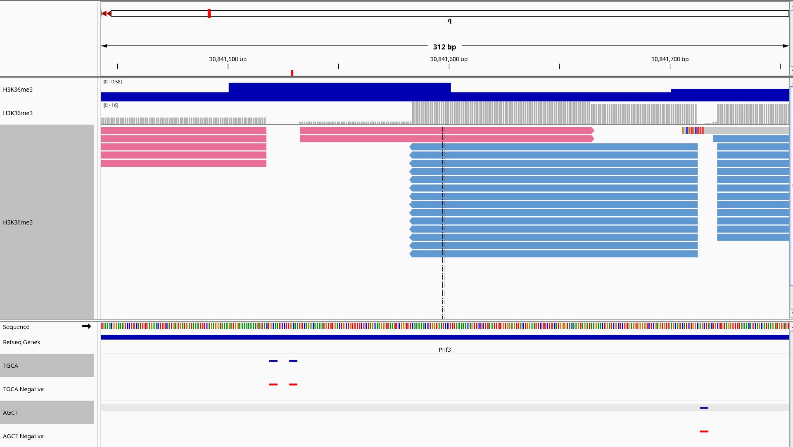
Reads are deduplicated based on UMI, cut site location and barcodes.
In IGV, the reads can be colored based on barcode by selecting BC. See here for a list of all tags
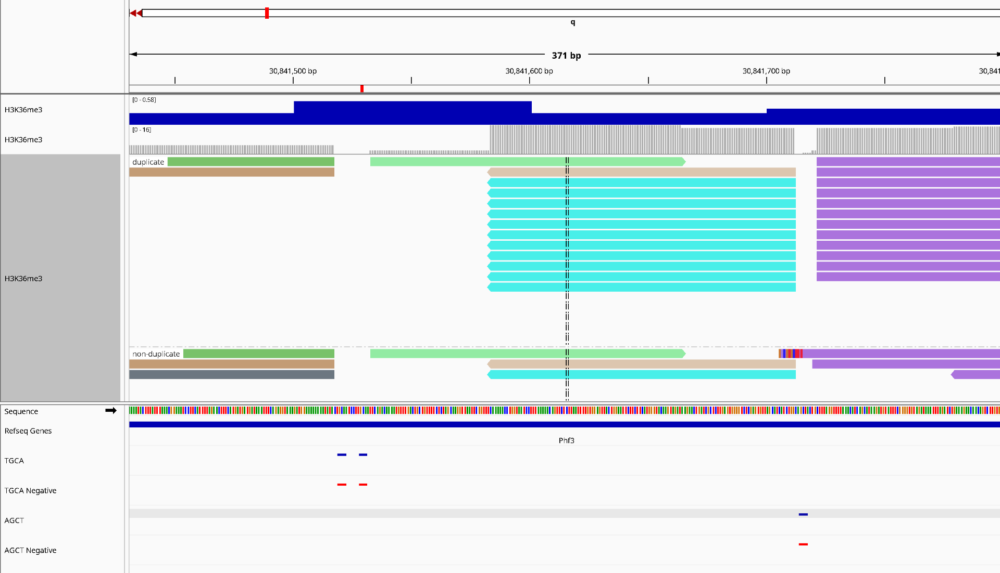
Only reads which are unique and do not have the qcfail tag are counted in the final count tables and coverage files.
Results
The workflow generates the following output folders:
- tagged : The alignments of the reads, with SAM tags which indicate QC information
- coverage : BigWig coverage tracks to visualize the coverage in a genome browser
- loom : Count tables in an efficient data format
- multiqc : Final report
- pipeline_info : All technical information regarding the workflow run(s), exact tool versions and parameters
Example Output Tree
results/
├── adapter_trimming
│ ├── sample1_gDNA_S1_L001_R1_001.part_001.cutadapt.log
│ └── sample1_gDNA_S1_L001_R1_001.part_001.trim.fastq.gz
├── coverage
│ └── gDNA
│ ├── excluded
│ │ └── sample1_demultiplexfail.bigWig
│ ├── sample1_target1.bigWig
│ └── sample1_target2.bigWig
├── loom
│ └── gDNA
│ ├── sample1_target1_gDNA.loom
│ └── sample1_target2_gDNA.loom
├── multiqc
│ ├── multiqc_data/
│ └── multiqc_report.html
├── pipeline_info
│ ├── execution_report_YYYY-MM-DD_HH-MM-SS.html
│ └── execution_trace_YYYY-MM-DD_HH-MM-SS.txt
└── tagged
└── gDNA
├── sample1_gDNA.tagged.bam
└── sample1_gDNA.tagged.bam.bairesults/
├── adapter_trimming
│ ├── sample1_gDNA_S1_L001_R1_001.part_001.cutadapt.log
│ └── sample1_gDNA_S1_L001_R1_001.part_001.trim.fastq.gz
├── coverage
│ └── gDNA
│ ├── excluded
│ │ └── sample1_demultiplexfail.bigWig
│ ├── sample1_target1.bigWig
│ └── sample1_target2.bigWig
├── loom
│ └── gDNA
│ ├── sample1_target1_gDNA.loom
│ └── sample1_target2_gDNA.loom
├── multiqc
│ ├── multiqc_data/
│ └── multiqc_report.html
├── pipeline_info
│ ├── execution_report_YYYY-MM-DD_HH-MM-SS.html
│ └── execution_trace_YYYY-MM-DD_HH-MM-SS.txt
└── tagged
└── gDNA
├── sample1_gDNA.tagged.bam
└── sample1_gDNA.tagged.bam.baiOutput Data
Tagged BAM files
| SamTag | |
|---|---|
| ep | Epitope, for example H3K36me3 or H3K27me3, defined in the well to target sheet OR the DPM to target sheet |
| BC | All extracted tags for this read for example DPM6F1|NYBot56_Stg|Even2Bo85|Odd2Bo38|ConstantRCmin16|DPM6F |
| OK | 1 when the demultiplexing of the barcodes succeeded, 0 otherwise |
| SM | subsample (sm) and Cell to which the read is assigned |
| RX | Unique molecular identifier |
| RG | Read group |
| sm | Subsample, this is the (sub)sample defined in the well to sample sheet |
| RR | Rejection reason when read is not counted |
gDNA:
| SamTag | |
|---|---|
| DS | Center coordinate of the restriction site |
| oD | Offset to the restriction site in bp |
| RZ | Motif of the restriction site |
Count Tables
Count tables are generated in LOOM format for downstream analysis.
The LOOM files have one layer per restriction enzyme, the bin size is configurable in the config file (or can be passed using --bin_size). Each modality and subsample are stored in separate LOOM files.
sample = ad.io.read_loom('test.loom')
sample[:,100:].varsample = ad.io.read_loom('test.loom')
sample[:,100:].var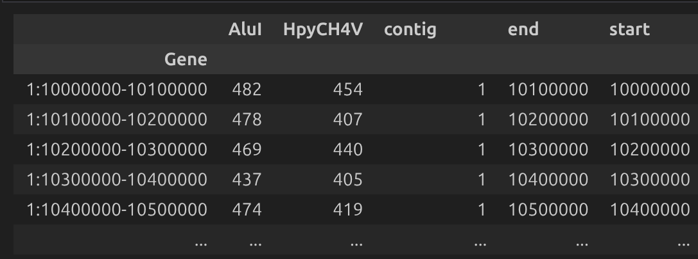
Normalized Counts
For bulk samples where a control sample is provided the raw-count LOOM files are normalized and the normalized counts are stored in the folder results/loom/gDNA_normalized
Statistics
In the folder statistics the statistics on the cell level are stored:
Sample1_A_H3K4me1_gDNA:
Average bins per cell: 12
Average reads per cell: 13
Maximum reads in a passing cell: 57
Minimum reads in a passing cell: 7
QC failing cells: 843
QC passing cells: 151Sample1_A_H3K4me1_gDNA:
Average bins per cell: 12
Average reads per cell: 13
Maximum reads in a passing cell: 57
Minimum reads in a passing cell: 7
QC failing cells: 843
QC passing cells: 151And in the folder tagged the statistics on the read level:
overall_statistics:
Sample1_A_gDNA:
reads: 62469631
reads>H3K27ac>mapped: 1373240
reads>H3K27ac>mapped>duplicate: 750900
reads>H3K27ac>mapped>pass: 622340
reads>H3K27me3>mapped: 12950771
reads>H3K27me3>mapped>duplicate: 7162070
reads>H3K27me3>mapped>pass: 5788701
reads>H3K36me3>mapped: 23386928
reads>H3K36me3>mapped>duplicate: 12936827
reads>H3K36me3>mapped>pass: 10450101
reads>not_demultiplexed: 5274overall_statistics:
Sample1_A_gDNA:
reads: 62469631
reads>H3K27ac>mapped: 1373240
reads>H3K27ac>mapped>duplicate: 750900
reads>H3K27ac>mapped>pass: 622340
reads>H3K27me3>mapped: 12950771
reads>H3K27me3>mapped>duplicate: 7162070
reads>H3K27me3>mapped>pass: 5788701
reads>H3K36me3>mapped: 23386928
reads>H3K36me3>mapped>duplicate: 12936827
reads>H3K36me3>mapped>pass: 10450101
reads>not_demultiplexed: 5274This means that Sample1_A_gDNA has 62469631 reads (after trimming). Of which 1373240 are mapped H3K27ac reads. 750900 of those reads are duplicate and 622340 are unique and associated to a restriction site.
BigWig tracks
The bigWig tracks show the coverage of reads with a proper motif. A bigwig file is produced for each combination of subsample and epitope.
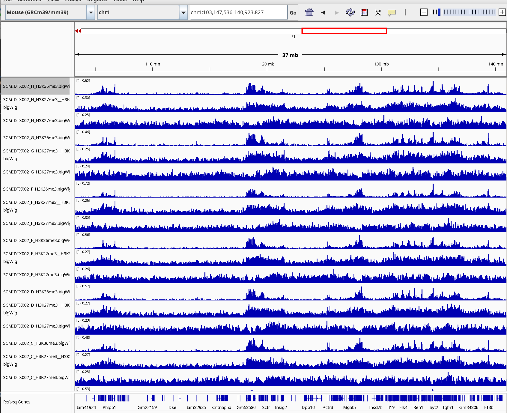
MultiQC
Output files * multiqc/ + multiqc_report.html: a standalone HTML file that can be viewed in your web browser. + multiqc_data/: directory containing parsed statistics from the different tools used in the pipeline. + multiqc_plots/: directory containing static images from the report.
MultiQC is a reporting tool that generates a single HTML report summarising all samples in your project. Currently the report only lists the software versions. But this will likely be expanded later.
Pipeline information
Output files * pipeline_info/ + Reports generated by Nextflow: execution_report.html, execution_timeline.html, execution_trace.txt and pipeline_dag.dot/pipeline_dag.svg. + Reports generated by the pipeline: pipeline_report.html, pipeline_report.txt and software_versions.yml. The pipeline_report* files will only be present if the --email / --email_on_fail parameter’s are used when running the pipeline. + Reformatted samplesheet files used as input to the pipeline: samplesheet.valid.csv. + Parameters used by the pipeline run: params.json.
Glossary
| Term | Meaning |
|---|---|
| MAbID | Multiplexing Antibodies by barcode Identification |
| DPM | DNA Phosphate Modified adapter |
| RPM | RNA Phosphate Modified adapter |
| gDNA | Genomic DNA |
| Well | Location in a 96 well plate (e.g. A5) |